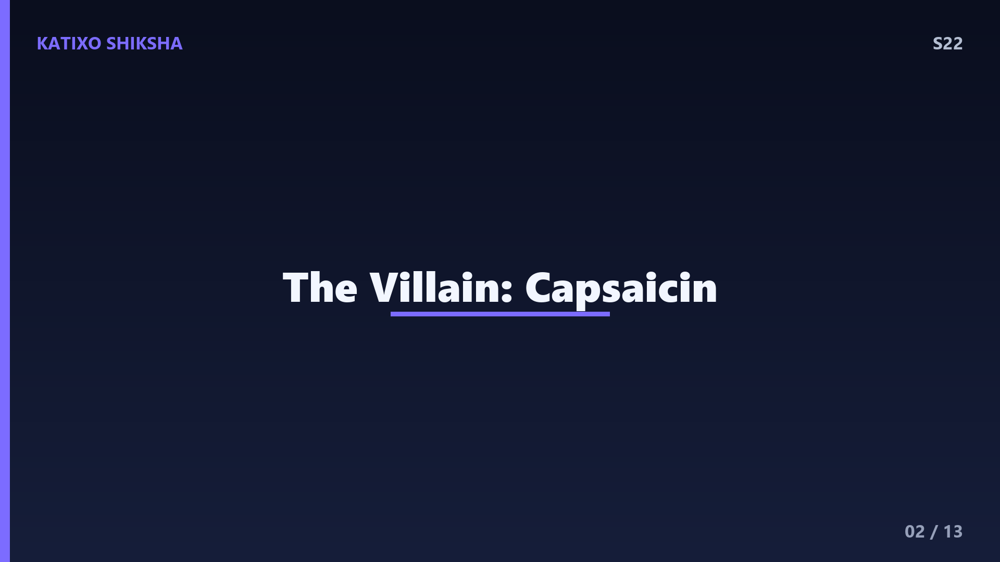
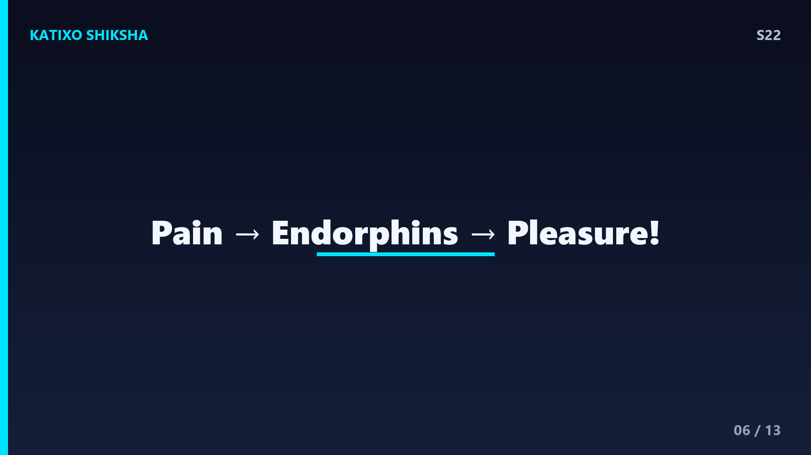
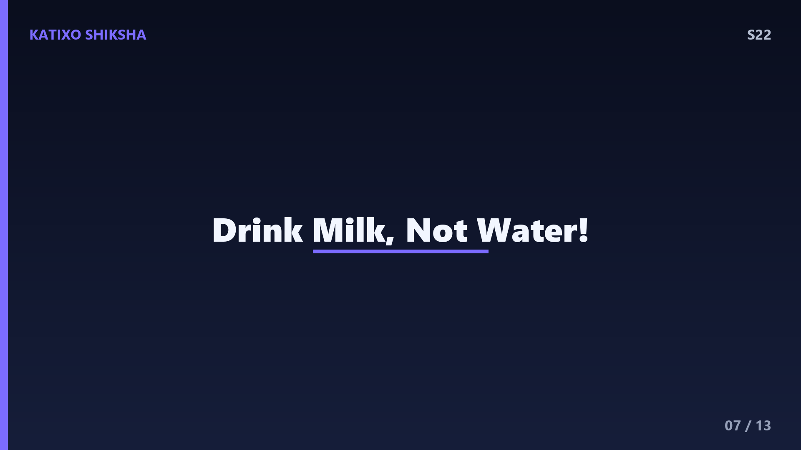

S22 — Spicy खाना मुँह में आग क्यों लगाता है?
Slide 1दोस्तों, सोचो, तुमने अभी-अभी एक तीखी मिर्च खाई, और अचानक मुँह में आग लग गई, आँखों से पानी, नाक बहने लगी! लेकिन रुको, क्या सच में तुम्हारा मुँह जल रहा है? जवाब है, बिल्कुल नहीं! कोई असली आग नहीं है, फिर भी जलन इतनी असली लगती है. ये तुम्हारे दिमाग़ का एक शानदार धोखा है! आज Katixo KhojLab पर हम जानेंगे कि मिर्च का वो खास chemical कौन सा है, ये कैसे तुम्हारे दिमाग़ को बेवकूफ़ बनाता है, और दूध पीने से राहत क्यों मिलती है. चलो शुरू करते हैं!

Slide 2सबसे पहले मिलो असली villain से, दोस्तों. मिर्च में एक chemical होता है जिसका नाम है capsaicin. ये एक colourless, odourless यानी बिना रंग और बिना गंध वाला पदार्थ है, और यही पूरी जलन का असली कारण है. मज़े की बात, capsaicin सबसे ज़्यादा मिर्च के बीजों में नहीं, बल्कि उस सफ़ेद हिस्से में होता है जिसे placenta कहते हैं, जहाँ बीज जुड़े होते हैं. इसीलिए अगर तुम मिर्च का वो सफ़ेद हिस्सा निकाल दो, तो तीखापन काफ़ी कम हो जाता है. एक chemical, और इतना बड़ा drama!
Slide 3अब असली science, दोस्तों. तुम्हारी जीभ और मुँह में छोटे-छोटे sensors होते हैं जिन्हें receptors कहते हैं. एक खास receptor है जिसका नाम है TRPV1. इसका असली काम है गर्मी को महसूस करना, यानी जब कोई चीज़ करीब 43 degree Celsius से ज़्यादा गरम हो, तो ये receptor दिमाग़ को signal भेजता है, सावधान, यहाँ गर्मी है! कमाल की बात ये है कि capsaicin बिल्कुल उसी receptor को खोल देता है, चाहे तापमान normal ही क्यों ना हो. यानी मिर्च तुम्हारे temperature sensor को छूकर उसे चालू कर देती है!
Slide 4तो अब समझो असली खेल, दोस्तों. जब capsaicin उस TRPV1 receptor को activate करता है, तो वो दिमाग़ को बिल्कुल वही message भेजता है जो असली गर्मी या जलती हुई चीज़ भेजती. दिमाग़ सोचता है, अरे, मुँह जल रहा है! इसलिए वो burning यानी जलन का एहसास पैदा करता है, भले ही तापमान बिल्कुल भी नहीं बढ़ा. यानी मिर्च का तीखापन असल में एक स्वाद नहीं, बल्कि दर्द और गर्मी का एहसास है! यही वजह है कि तीखा खाने पर मुँह सच में गरम जैसा महसूस होता है, पर असल में जल कुछ नहीं रहा.
Slide 5अब बात करते हैं उन reactions की जो तुम्हारा शरीर दिखाता है, दोस्तों. जब दिमाग़ को लगता है कि मुँह में गर्मी का खतरा है, तो वो शरीर को बचाने के लिए कई कदम उठाता है. आँखों से पानी आता है ताकि जलन धुल जाए, नाक बहने लगती है, और चेहरे पर पसीना आ जाता है ताकि शरीर ठंडा हो. साथ ही, दिल की धड़कन थोड़ी तेज़ हो जाती है. ये सब reactions असल में तुम्हारे शरीर का defense system है, जो एक झूठे alarm पर पूरी तैयारी से जुट जाता है!

Slide 6यहाँ एक super interesting twist है, दोस्तों. दर्द महसूस होने पर तुम्हारा दिमाग़ endorphins नाम के chemicals छोड़ता है, जो शरीर के natural painkillers हैं. ये endorphins एक अच्छा, हल्का सुकून भरा एहसास देते हैं. इसके साथ dopamine भी release होता है, जो खुशी से जुड़ा chemical है. इसीलिए बहुत से लोगों को तीखा खाना अच्छा लगता है, उन्हें उस हल्की सी जलन के बाद वाला मज़ा पसंद आता है! Scientists इसे benign masochism कहते हैं, यानी सुरक्षित खतरे का आनंद लेना. है ना दिलचस्प?

Slide 7अब सबसे ज़रूरी सवाल, दोस्तों, जलन कम कैसे करें? बहुत से लोग पानी पीते हैं, पर रुको, पानी से जलन और भी फैल सकती है! क्यों? क्योंकि capsaicin तेल जैसा होता है, यानी oil-loving या fat-soluble, और पानी तेल को घोल नहीं सकता. पानी बस capsaicin को मुँह में इधर-उधर फैला देता है. इसका असली इलाज है दूध! दूध में casein नाम का protein होता है जो capsaicin को पकड़कर खींच लेता है, बिल्कुल साबुन की तरह जो तेल को हटाता है. इसीलिए तीखा लगने पर दूध, दही या lassi सबसे बढ़िया उपाय हैं.
Slide 8अब एक मज़ेदार सवाल, मिर्च की तीखास नापते कैसे हैं? दोस्तों, इसके लिए एक special scale है जिसका नाम है Scoville scale. एक shimla mirch यानी bell pepper का score शून्य होता है, क्योंकि उसमें capsaicin नहीं होता. एक आम हरी मिर्च करीब पांच हज़ार Scoville units की होती है. लेकिन दुनिया की सबसे तीखी मिर्चों में से एक, Carolina Reaper, का score बीस लाख units से भी ऊपर जा सकता है! इतनी तीखी कि लोग उसे खाने से पहले दस्ताने पहनते हैं. Capsaicin की ताक़त वाकई हैरान कर देने वाली है!
Slide 9एक बड़ा सवाल, दोस्तों, मिर्च खुद इतनी तीखी क्यों बनती है? इसके पीछे एक clever survival strategy है. capsaicin मिर्च का defense weapon है, जो उसे जानवरों जैसे चूहों से बचाता है, क्योंकि उनके मुँह में वो जलन का एहसास होता है. लेकिन कमाल की बात, पक्षियों के पास वो TRPV1 receptor इस तरह काम नहीं करता, इसलिए उन्हें तीखापन महसूस ही नहीं होता! पक्षी मिर्च खाकर उसके बीज दूर-दूर तक फैला देते हैं. यानी मिर्च ने evolution के ज़रिए एक perfect deal बना लिया है, smart है ना nature?
Slide 10तो एक quick recap, दोस्तों. मिर्च में capsaicin नाम का chemical होता है, जो तुम्हारी जीभ के TRPV1 receptor को activate करता है, वही receptor जो असली गर्मी पकड़ता है. इससे दिमाग़ को लगता है मुँह जल रहा है, और वो आँसू, पसीना, और endorphins जैसी reactions शुरू कर देता है. पानी से जलन नहीं जाती क्योंकि capsaicin तेल जैसा है, पर दूध का casein उसे हटा देता है. अगली बार तीखा खाओ, तो याद रखना, कोई आग नहीं, बस तुम्हारे दिमाग़ का एक शानदार धोखा है!
Slide 11अब समय है Quick brain check का, दोस्तों! तीन सवाल, और तुम्हें खुद जवाब सोचना है. पहला, मिर्च में वो कौन सा chemical है जो जलन पैदा करता है? दूसरा, हमारी जीभ का वो कौन सा receptor है जो गर्मी और capsaicin दोनों को महसूस करता है? और तीसरा, तीखापन कम करने के लिए पानी से बेहतर क्या है, और क्यों? अब video को pause करो, थोड़ा दिमाग़ लगाओ, और तीनों जवाब बोलकर देखो. तैयार हो? चलो जवाब मिलाते हैं अगली slide पर!
Slide 12चलो दोस्तों, अब जवाब मिलाते हैं! पहला जवाब, मिर्च में जलन capsaicin नाम के chemical से होती है, जो ज़्यादातर मिर्च के सफ़ेद हिस्से में पाया जाता है. दूसरा जवाब, वो receptor है TRPV1, जो असल में गर्मी पकड़ने के लिए बना है पर capsaicin से भी चालू हो जाता है. और तीसरा जवाब, पानी से बेहतर है दूध, क्योंकि उसमें casein protein होता है जो तेल जैसे capsaicin को पकड़कर हटा देता है. कितने सही हुए? तीनों सही तो तुम तो असली spice scientist हो!
Slide 13तो दोस्तों, आज हमने समझा कि spicy खाना असल में मुँह जलाता नहीं, बल्कि capsaicin तुम्हारे temperature receptor को छूकर दिमाग़ को धोखा देता है, और शरीर उस झूठे alarm पर पूरी defense दिखाता है. साथ में मिलने वाले endorphins की वजह से तीखा खाना मज़ेदार भी लगता है! अगले episode में हम एक रंग-बिरंगे सवाल का जवाब ढूंढेंगे, आसमान में rainbow आख़िर बनता कैसे है? बहुत खूबसूरत topic है. Subscribe करना मत भूलना! Bye!